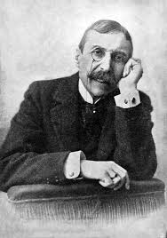

Eça de Queirós: O Arquiteto da Crítica Realista
José Maria de Eça de Queirós (1845-1900) ergue-se como a figura incontornável e o maior expoente do romance realista em Portugal. Embora os seus primeiros trabalhos literários ainda ecoassem traços do Romantismo, Eça rapidamente adotou a nova estética realista como a ferramenta ideal para dissecar, com mestria e ironia, a sociedade portuguesa do seu tempo.
Armado com uma ironia fina, por vezes cáustica, e uma capacidade de observação social incomparável, Eça de Queirós expôs as feridas abertas de Portugal: a decadência moral e intelectual da aristocracia e da burguesia emergente, a hipocrisia entranhada no clero, a futilidade e superficialidade das relações sociais lisboetas, a corrupção endémica nas esferas de poder e o persistente atraso cultural e político que travava o progresso do país.
Obras Fundamentais: Um Espelho da Nação
Os romances de Eça de Queirós não são apenas literatura; são diagnósticos sociais que se tornaram marcos incontornáveis da literatura em língua portuguesa:
- O Crime do Padre Amaro (1875): Frequentemente apontado como o primeiro grande romance realista português (com fortes influências naturalistas), esta obra desfere uma crítica feroz à corrupção moral no seio da Igreja Católica e à hipocrisia sufocante da sociedade provinciana.
- O Primo Basílio (1878): Uma análise penetrante da futilidade, do tédio e das frustrações existenciais da vida burguesa em Lisboa, explorando temas como o adultério, as convenções sociais opressoras e a falta de propósito.
- Os Maias (1888): Considerada a sua obra-prima, oferece um painel vasto, detalhado e implacável da alta sociedade lisboeta em processo de decadência, abordando a impossibilidade do amor genuíno, a falência dos ideais reformistas da Geração de 70 e uma sensação avassaladora de estagnação nacional.
- Outras obras de relevo incluem A Relíquia (1887), uma sátira mordaz à religiosidade superficial, e A Ilustre Casa de Ramires (1900), uma reflexão sobre a nobreza rural e a identidade nacional.
O Legado Duradouro do Olhar Realista
O impacto do Realismo português, e da obra de Eça de Queirós em particular, transcende largamente os limites do século XIX. O movimento deixou um legado profundo e multifacetado que continua a ressoar na cultura e no pensamento contemporâneos:
- Consolidação da Crítica Social: Firmou a literatura e a arte como espaços legítimos e necessários para o questionamento crítico da sociedade, uma tradição que permanece vibrante.
- Aprofundamento Psicológico: A análise incisiva das motivações, ambiguidades e conflitos internos das personagens influenciou profundamente a ficção portuguesa posterior.
- Referência Estilística: A busca pela precisão lexical, objetividade descritiva e o uso magistral da ironia tornaram-se modelos de linguagem e estilo.
- Debate sobre Identidade Nacional: A postura de autoexame crítico sobre os problemas e dilemas de Portugal, iniciada pelos realistas, permanece central nos debates contemporâneos sobre o país.
- Presença no Cânone Educacional: As obras realistas continuam a ser estudadas e analisadas nas escolas e universidades, garantindo a sua permanência cultural e a sua capacidade contínua de gerar reflexão crítica.
- Valorização do Pensamento Crítico: A atitude fundamentalmente realista de questionar as aparências, analisar a realidade com base na razão e na observação, e desconfiar de idealismos fáceis é um valor intelectual essencial deixado pelo movimento.
Em suma, Eça de Queirós e o Realismo não foram apenas um capítulo na história literária portuguesa. Foram uma força catalisadora de mudança, cujo espírito crítico, olhar analítico e busca pela verdade continuam a inspirar, desafiar e enriquecer a cultura lusófona.